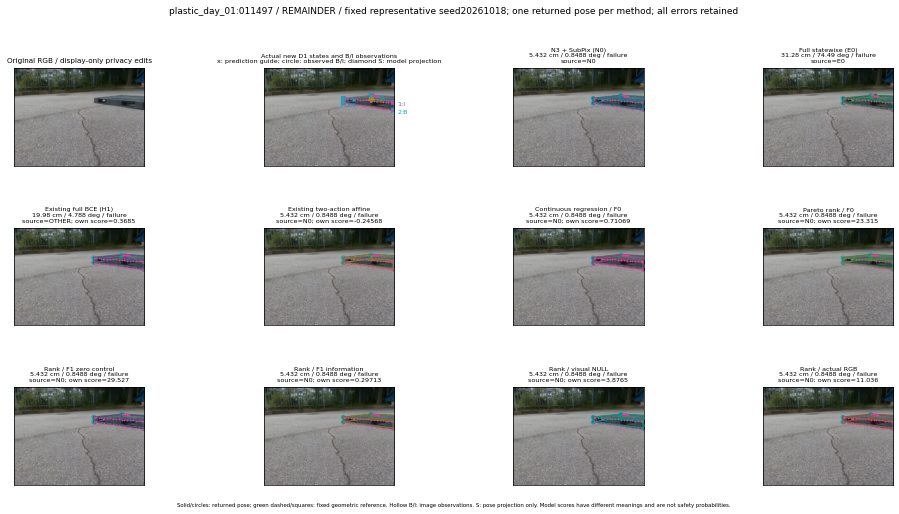

실선은 반환 자세, 초록 점선은 고정 기하 참조입니다. S는 영상 관측이 아닙니다. 점수는 모델별 의미가 다르며 보정된 안전 확률이 아닙니다. 개인정보 처리는 표시 사본에만 적용했습니다.
| 방법·seed | 위치 / 회전 / 공동성공 | 실제 출처 | 선택 후보 | 각 모델 자체 점수 |
|---|---|---|---|---|
| N0 | 5.432 cm / 0.8488 deg / failure | N0 | N/A | N/A |
| E0 | 31.28 cm / 74.49 deg / failure | E0 | N/A | N/A |
| E0_REGENERATED | 31.28 cm / 74.49 deg / failure | E0 | E0_REGENERATED | N/A |
| POSEFIX_SUBPIX_PF_ANCHOR | 3.19 cm / 1.325 deg / success | OTHER | N/A | N/A |
| POSEFIX_SUBPIX_YOLO_ANCHOR | 3.314 cm / 1.34 deg / success | OTHER | N/A | N/A |
| D1_H1_MLP_s20261018 | 19.98 cm / 4.788 deg / failure | OTHER | G13/ORIGINAL_WD/endpoint/37 | 0.36850276589393616 |
| D1_H1_MLP_s20261019 | 19.98 cm / 4.788 deg / failure | OTHER | G13/ORIGINAL_WD/endpoint/37 | 0.008565995842218399 |
| D1_H1_MLP_s20261020 | 15.38 cm / 3.531 deg / failure | OTHER | G10/ORIGINAL_WD/endpoint/13 | -0.05428038537502289 |
| D1_H1_PAIR_MLP_s20261018 | 5.432 cm / 0.8488 deg / failure | N0 | N0 | -1.3247660398483276 |
| D1_H1_PAIR_MLP_s20261019 | 5.432 cm / 0.8488 deg / failure | N0 | N0 | -1.116695523262024 |
| D1_H1_PAIR_MLP_s20261020 | 5.432 cm / 0.8488 deg / failure | N0 | N0 | -0.8920670747756958 |
| D1_H1_PAIR_ROLE_AFFINE_s20261018 | 5.432 cm / 0.8488 deg / failure | N0 | N0 | -0.24567502737045288 |
| D1_H1_PAIR_ROLE_AFFINE_s20261019 | 5.432 cm / 0.8488 deg / failure | N0 | N0 | -0.5503044128417969 |
| D1_H1_PAIR_ROLE_AFFINE_s20261020 | 5.432 cm / 0.8488 deg / failure | N0 | N0 | -0.33377209305763245 |
| R_CONT_F0_s20261018 | 5.432 cm / 0.8488 deg / failure | N0 | N0 | 0.710685670375824 |
| R_CONT_F0_s20261019 | 5.432 cm / 0.8488 deg / failure | N0 | N0 | 0.7709153294563293 |
| R_CONT_F0_s20261020 | 5.432 cm / 0.8488 deg / failure | N0 | N0 | 0.6412873268127441 |
| R_ORDER_F0_s20261018 | 5.432 cm / 0.8488 deg / failure | N0 | N0 | 23.31475830078125 |
| R_ORDER_F0_s20261019 | 5.432 cm / 0.8488 deg / failure | N0 | N0 | 19.214191436767578 |
| R_ORDER_F0_s20261020 | 5.432 cm / 0.8488 deg / failure | N0 | N0 | -0.8997114300727844 |
| R_ORDER_F1_ZERO_s20261018 | 5.432 cm / 0.8488 deg / failure | N0 | N0 | 29.52729034423828 |
| R_ORDER_F1_ZERO_s20261019 | 5.348 cm / 0.7096 deg / failure | OTHER | P1/ORIGINAL_WD/selected | 37.12460708618164 |
| R_ORDER_F1_ZERO_s20261020 | 5.432 cm / 0.8488 deg / failure | N0 | N0 | 19.0139102935791 |
| R_ORDER_F1_s20261018 | 5.432 cm / 0.8488 deg / failure | N0 | N0 | 0.29713132977485657 |
| R_ORDER_F1_s20261019 | 5.432 cm / 0.8488 deg / failure | N0 | N0 | 8.159807205200195 |
| R_ORDER_F1_s20261020 | 5.432 cm / 0.8488 deg / failure | N0 | N0 | 3.192687749862671 |
| V_ORDER_NULL_s20261018 | 5.432 cm / 0.8488 deg / failure | N0 | N0 | 3.87646746635437 |
| V_ORDER_NULL_s20261019 | 5.432 cm / 0.8488 deg / failure | N0 | N0 | 3.6223855018615723 |
| V_ORDER_NULL_s20261020 | 5.432 cm / 0.8488 deg / failure | N0 | N0 | 11.996316909790039 |
| V_ORDER_RGB_s20261018 | 5.432 cm / 0.8488 deg / failure | N0 | N0 | 11.0362548828125 |
| V_ORDER_RGB_s20261019 | 5.432 cm / 0.8488 deg / failure | N0 | N0 | 3.6255221366882324 |
| V_ORDER_RGB_s20261020 | 5.432 cm / 0.8488 deg / failure | N0 | N0 | -5.202357292175293 |